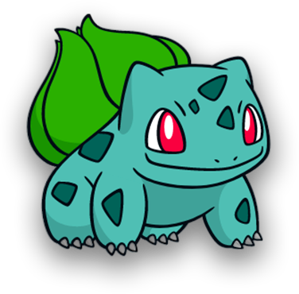

<ion-header>
  <ion-toolbar>
    <ion-title>Modal</ion-title>
    <ion-buttons slot="end">
      <ion-button (click)="setClose()">Close</ion-button>
    </ion-buttons>
  </ion-toolbar>
</ion-header>
<ion-content class="ion-padding">

    <div>
      
    </div>

</ion-content>
